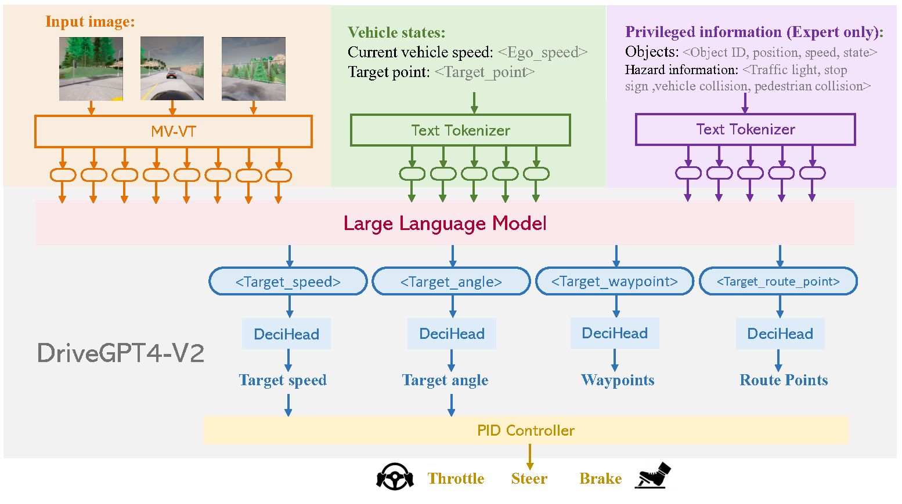
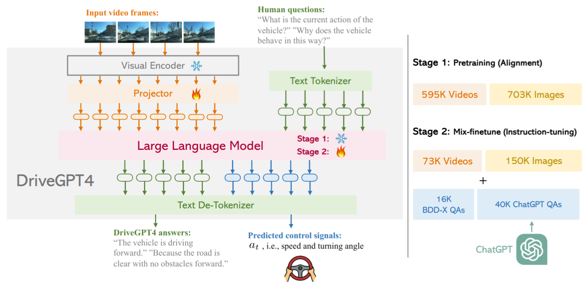

Recent News
-
Awarded HKPFS (Hong Kong PhD Fellowship Scheme) for my PhD study at HKU, 2024
-
Pursuing my PhD at the University of Hong Kong, 2024
|
Research
My research interest includes Representation Learning, Computer Vision and 3D Understanding.
|
|

|
DriveGPT4-V2: Harnessing Large Language Model Capabilities for Enhanced Closed-Loop Autonomous Driving
Zhenhua Xu,
Yan Bai,
Yujia Zhang,
Zhuoling Li,
Fei Xia,
Kwan-Yee. K. Wongi,
Jianqiang Wang,
Hengshuang Zhao
CVPR, 2025
|
|

|
DriveGPT4: Interpretable End-to-end Autonomous Driving via Large Language Model
Zhenhua Xu,
Yujia Zhang,
Enze Xie,
Zhen Zhao,
Yong Guo,
Kwan-Yee. K. Wongi,
Zhenguo Li,
Hengshuang Zhao
RA-L, 2024
arXiv
|
Internship
|
|
A*STAR I²R, Research Intern supervised by Yan Wu , 2024
|
Teaching
|
|
Teaching Assistant, Computer Programming, Fall 2024
|
Awards
|
Hong Kong PhD Fellowship Scheme (HKPFS), 2024.
National Scholarship, 2021 & 2023.
Outstanding Graduate of Zhejiang Province and Zhejiang University, 2024.
|
Organization
|
ZJUSRA, Students' Robot Association of Zhejiang University (Top 10 Club), 2020-2022
ZJUDancer, the robot team for KidSize soccer competition of RoboCup Humanoid League in Zhejiang University, 2024
|
|
{kind=link}